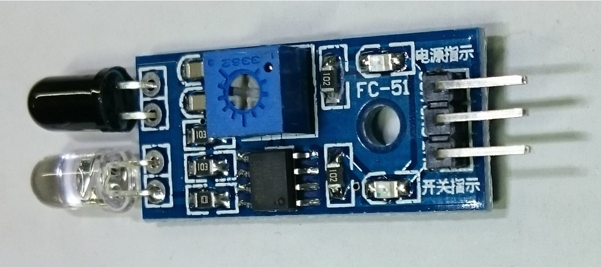
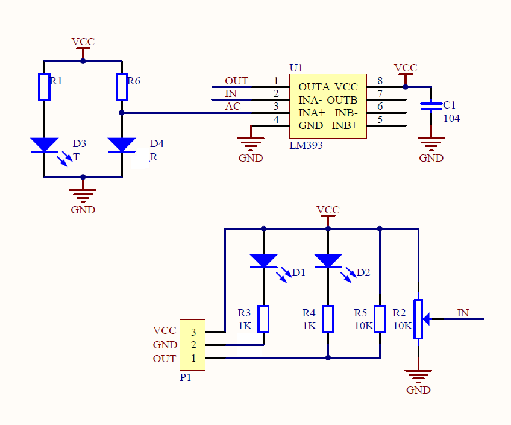

 |
| 使用三用電錶量測OUT接腳 電壓變化 |
| 紅
外線接收器收到信號 OUT LOW (LED亮) 紅外線接收器沒收到信號 OUT HIGH |
 INA+ >INA- OUTA=PULL-HIGH (Open-collector) INA+ <INA- OUTA=LOW |
| 沿桌邊走 |
| 順
時針 感測器 放左邊 沒收到信號(HIGH) 右轉 收到信號 (LOW) 直走 |
| #define
DirR 12 #define DirL 11 #define PwmL 9 #define PwmR 10 #define irin A5 int val; void setup() { pinMode( DirL , OUTPUT); pinMode( DirR , OUTPUT); pinMode( irin , INPUT); analogWrite(PwmL,0); analogWrite(PwmR,0); digitalWrite(DirL,HIGH); digitalWrite(DirR,HIGH); } void loop() { val=digitalRead(irin); if(val==HIGH) { analogWrite(PwmL,150); analogWrite(PwmR,0); } else { analogWrite(PwmL,150); analogWrite(PwmR,150); } } |
| 逆
時針 感測器 放右邊 沒收到信號(HIGH) 左轉 收到信號 (LOW) 直走 |
| #define
DirR 12 #define DirL 11 #define PwmL 9 #define PwmR 10 #define irin A5 int val; void setup() { pinMode( DirL , OUTPUT); pinMode( DirR , OUTPUT); pinMode( irin , INPUT); analogWrite(PwmL,0); analogWrite(PwmR,0); digitalWrite(DirL,HIGH); digitalWrite(DirR,HIGH); } void loop() { val=digitalRead(irin); if(val==HIGH) { analogWrite(PwmL,0); analogWrite(PwmR,150); } else { analogWrite(PwmL,150); analogWrite(PwmR,150); } } |
| 順
時針 感測器 放左邊 沒收到信號(HIGH) 右轉 收到信號 (LOW) 左轉 |
| #define
DirR 12 #define DirL 11 #define PwmL 9 #define PwmR 10 #define irin A5 int val; void setup() { pinMode( DirL , OUTPUT); pinMode( DirR , OUTPUT); pinMode( irin , INPUT); analogWrite(PwmL,0); analogWrite(PwmR,0); digitalWrite(DirL,HIGH); digitalWrite(DirR,HIGH); } void loop() { val=digitalRead(irin); if(val==HIGH) { analogWrite(PwmL,150); analogWrite(PwmR,0); } else { analogWrite(PwmL,0); analogWrite(PwmR,150); } } |
| 逆
時針 感測器 放右邊 沒收到信號(HIGH) 左轉 收到信號 (LOW) 右轉 |
| #define
DirR 12 #define DirL 11 #define PwmL 9 #define PwmR 10 #define irin A5 int val; void setup() { pinMode( DirL , OUTPUT); pinMode( DirR , OUTPUT); pinMode( irin , INPUT); analogWrite(PwmL,0); analogWrite(PwmR,0); digitalWrite(DirL,HIGH); digitalWrite(DirR,HIGH); } void loop() { val=digitalRead(irin); if(val==HIGH) { analogWrite(PwmL,0); analogWrite(PwmR,150); } else { analogWrite(PwmL,150); analogWrite(PwmR,0); } } |